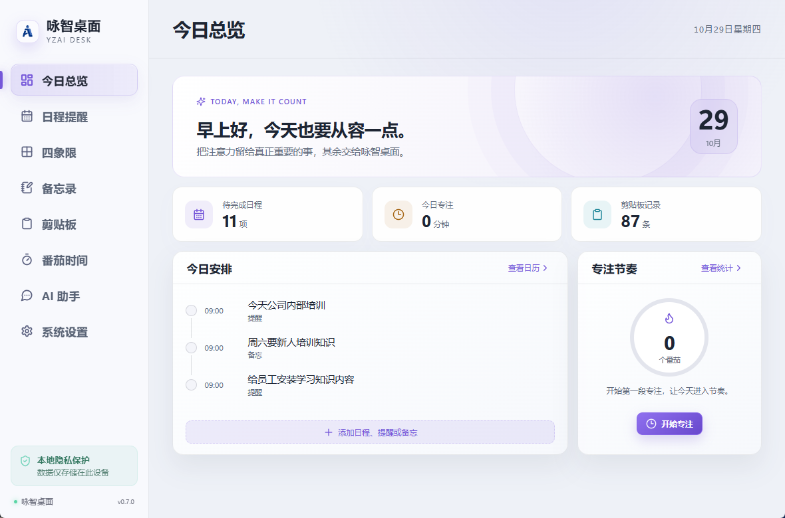
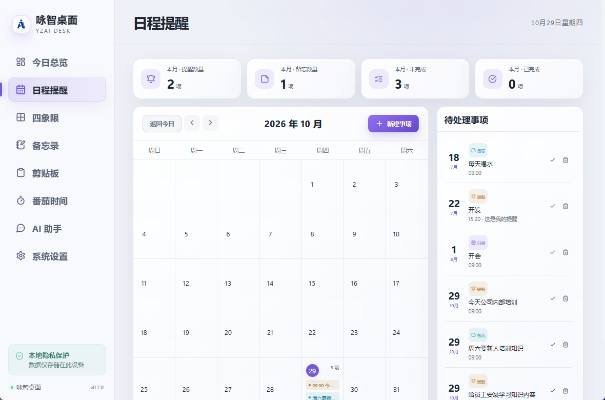
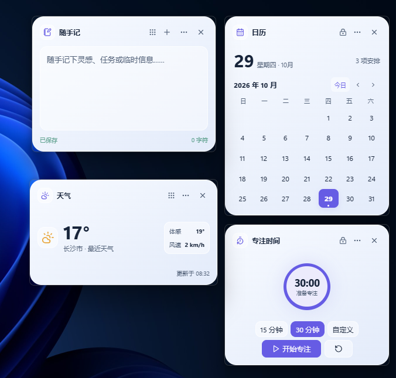

▦
日程提醒
在日历中记录安排与重要日期，让该记住的事按时提醒。
把纷繁的事情，安放在一个清爽的桌面。
从计划、记录到专注，让工作回到自己的节奏。

轻巧安装，日常功能集中在一个工作台。安装包约 6 MB，运行时内存占用约 53 MB，让每个想法和计划都有自己的位置。
在日历中记录安排与重要日期，让该记住的事按时提醒。
按重要与紧急程度梳理任务，先把精力留给真正重要的事。
随手记下灵感、整理文字，常用内容也能快速取用。
为工作和休息设定节奏，用一段段专注时间积累进展。
配置自己的 AI 服务，在熟悉的工作台里获得文字与思路支持。
把日历、天气、专注和备忘录放在桌面，抬眼就能查看。
从今天要做的事，到一个值得记录的念头。点选下方功能，看看它们在咏智桌面里的样子。
日历、事件与提醒放在一起。提前看见日程，给重要的事留出时间。

无需打开主窗口，也能快速查看日历、天气和备忘，或开启一段专注。选择喜欢的挂件，让桌面成为你的个人工作空间。

工具应该帮你整理生活，也应该尊重你的个人空间。
日程、任务、笔记和设置等数据保存在自己的电脑上，帮助保护个人隐私。
支持调整数据目录，以及导出和导入本地备份。
自行配置 API 接口后即可与大模型对话；对话请求会发送至所选服务商。Windows 桌面端使用系统机制保护 AI 密钥。
给日程一个秩序，给自己一点专注。
前往下载页面 ↗